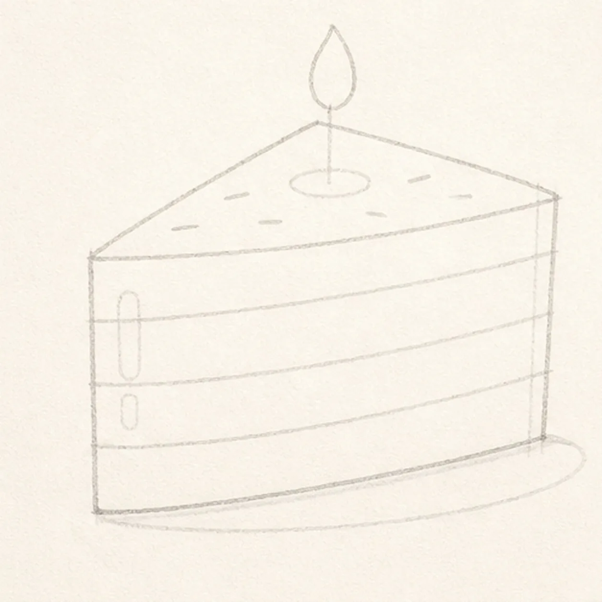
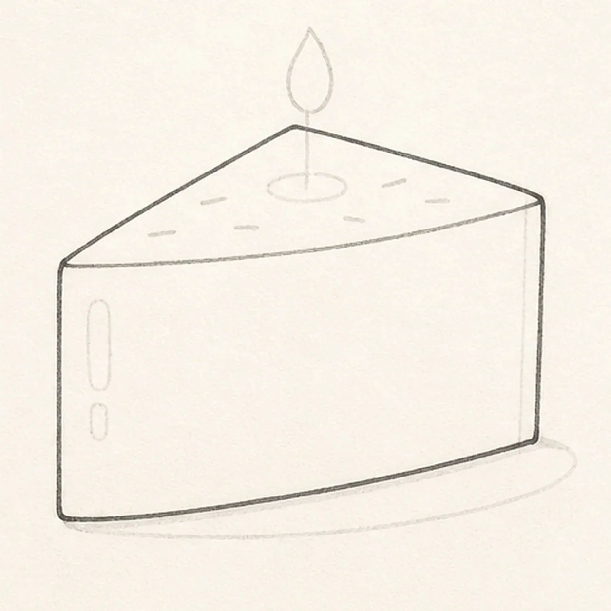
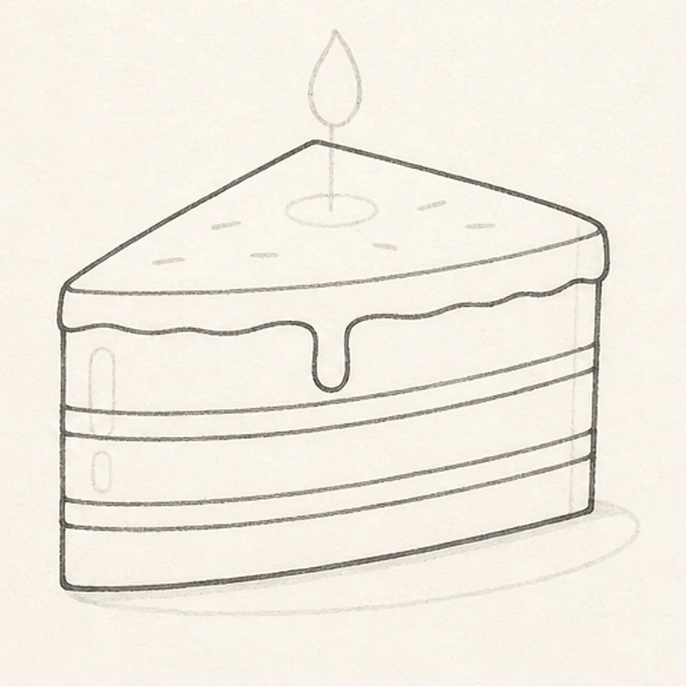
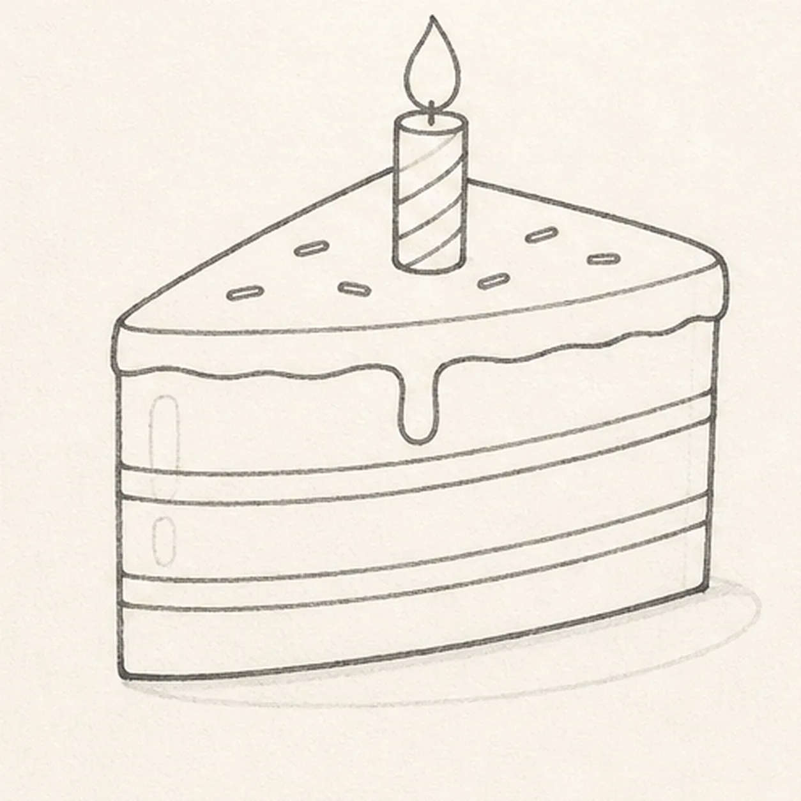
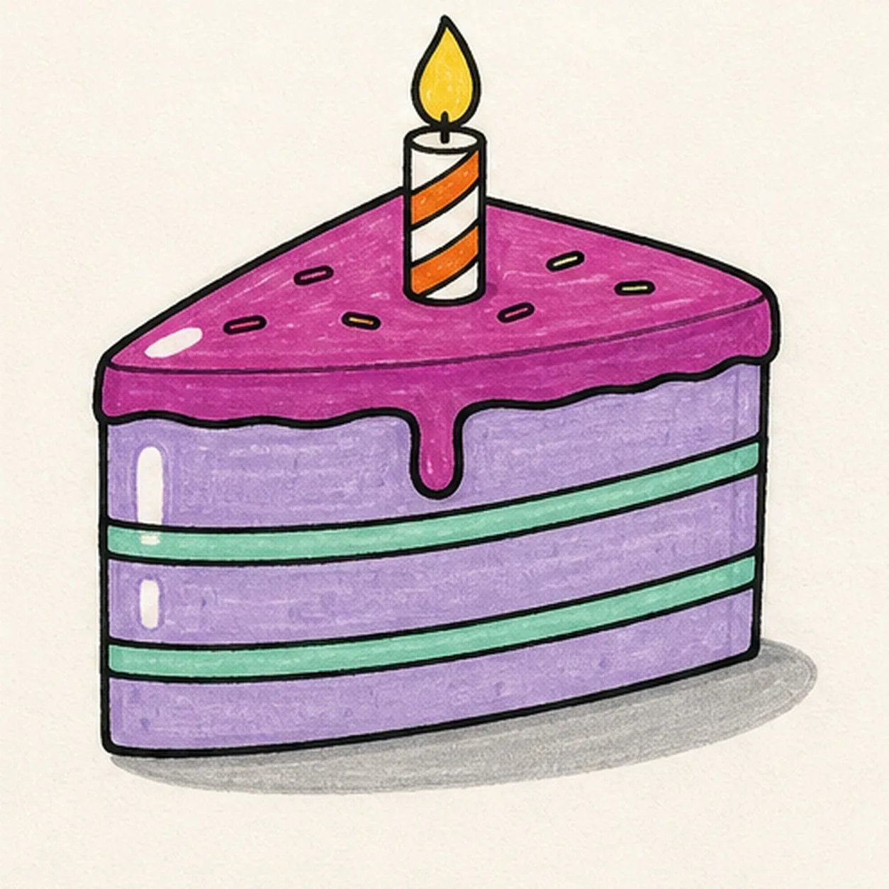

Felt-tip marker mode
Let's draw a birthday cake slice
Treat this as one playful practice round: sketch the idea loosely, simplify the shapes, then commit with confident marker outlines and bright fills.
-
01

Map the cake wedge
Draw a pale triangular top plane with broad front and side faces, then divide three layer zones and reserve the frosting edge, candle and flame, exactly six sprinkle positions, two side highlights, and one shallow shadow.
Marker tip: Ghost the two long top edges before touching down, then compare the front and side planes as empty shapes. Reserve the candle footprint now so you do not finish frosting or sprinkles only to cover them later.
-
02

Shape the cake slice
Wrap the guides with the complete triangular top, broad front face, visible side plane, and stable bottom edge while preserving every layer and decoration reserve.
Marker tip: Pull the two receding edges toward the same imagined point and keep the front edge gently curved. That small perspective check makes the slice feel solid before any frosting appears.
-
03

Stack the cake layers
Divide the established slice into exactly three sponge layers and two filling bands, then add the top frosting edge and exactly one soft drip down the front.
Marker tip: Follow the bottom edge when drawing each layer line so the stack stays in perspective. Count three lavender zones and two narrow filling gaps before moving to the candle.
-
04

Light the birthday details
Add one upright candle with two planned color bands, one flame, exactly six short sprinkles outside the candle footprint, two side highlight reserves, and one shallow shadow.
Marker tip: Place the six sprinkles as uneven dashes that follow the top plane, leaving open paper around the candle. Keep the flame centered over the wick so the candle does not look bent.
-
05

Ink the party colors
Thicken every established contour and fill the frosting raspberry purple, three sponge layers soft lavender, two fillings mint, two candle bands tangerine, the remaining candle cream, the flame golden yellow, and the shadow warm gray while preserving both side highlights and one top frosting highlight.
Marker tip: Pull marker strokes along each cake plane and across each filling band, then let them dry before reinforcing the black edges. Visible streaks are part of the doodle; muddying the mint bands into the lavender is not.
-
06
![Handmade face-free marker drawing of one three-quarter birthday cake slice with a pointed rear tip, broad front face, visible side plane, exactly three soft-lavender sponge layers, exactly two mint-green filling bands, one raspberry-purple top frosting layer with exactly one front drip, one upright cream candle with exactly two tangerine diagonal bands, one golden-yellow flame, exactly six short colorful sprinkle marks, two vertical side paper highlights, one top frosting paper highlight, thick imperfect black outlines, visible marker streaks, and one shallow warm-gray oval shadow](../assets/cartoon-birthday-cake-slice-finished-v1.webp)
Finish the birthday slice
Strengthen the keeper outlines and clarify the established cake planes, three layers, two filling bands, frosting and drip, candle and flame, six sprinkles, three highlights, limited fills, and shallow shadow.
Marker tip: Count three sponge layers, two fillings, one drip, one candle, and six sprinkles, then stop. A face, whole cake, plate, gift, confetti, sticker edge, or badge frame would turn this focused slice into a different lesson.